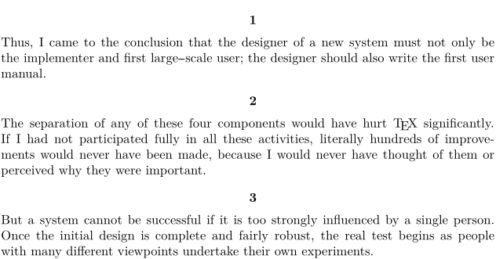

Contents
Summary
ConTeXt uses the TeX primitive
\everypar
internally, for locating sidefloats. This means that user assignments to it can interfere with those of the package. We therefore introduce
\EveryPar
, a command that can be safely employed by the user.
It's a fairly low-level command, and may lead to infinite loops during compilation if not used carefully (if the argument passed to \EveryPar starts a new paragraph, for example).
For numbering each paragraph, it may be simpler to use \setupparagraphnumbering instead.
Settings
Description
Examples
A centered paragraph counter
In simple cases, paragraphs can be numbered with \setupparagraphnumbering. If, however, you want the numbers to be centered, on a line on their own, it must be done with \EveryPar:
-
\setupwhitespace[big] % Create a new counter \definecounter[parnum][way=bytext] % Give the number some distance from the paragraph \def\deepstrut{\vrule width 0pt depth 2ex} % Will be typeset on every paragraph \def\NumberParagraph{ \incrementcounter[parnum] \midaligned{ \bf \rawcountervalue[parnum] \deepstrut } } \EveryPar{\NumberParagraph} \input knuth
- 